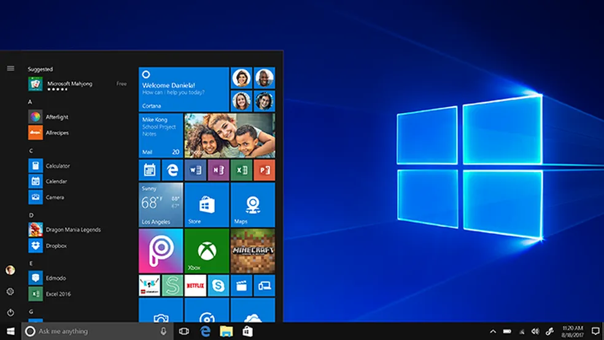

Windows 10
O Windows 10 é um sistema operacional desenvolvido pela Microsoft, que combina elementos familiares das versões anteriores do Windows com inovações modernas. Lançado em julho de 2015, o Windows 10 é conhecido por sua interface intuitiva e amigável, projetada para funcionar em uma ampla variedade de dispositivos, incluindo computadores desktop, laptops, tablets e até mesmo smartphones.
Uma das características marcantes do Windows 10 é o Menu Iniciar, que retorna em um formato atualizado, mesclando o estilo clássico do Windows 7 com as Tiles (Blocos) dinâmicas introduzidas no Windows 8. Isso oferece aos usuários uma experiência de navegação familiar, permitindo acesso rápido a aplicativos, configurações e outras funções do sistema.
O Windows 10 também introduziu a assistente virtual Cortana, que permite aos usuários executar comandos por voz, fazer perguntas e obter informações relevantes. Além disso, a integração da Microsoft Store oferece uma plataforma centralizada para baixar e instalar aplicativos, jogos, filmes e outros conteúdos.
O sistema operacional possui recursos de segurança robustos, como o Windows Defender, um antivírus e antimalware integrado, e atualizações regulares de segurança para proteger os usuários contra ameaças cibernéticas. A compatibilidade com dispositivos de toque e caneta, bem como a funcionalidade de área de trabalho virtual, são outras adições notáveis que aprimoram a produtividade e a experiência do usuário.
O Windows 10 é altamente personalizável, permitindo que os usuários escolham entre uma variedade de temas, papéis de parede e configurações de aparência para se adequarem ao seu gosto pessoal. Com uma combinação de recursos clássicos e inovadores, o Windows 10 oferece uma plataforma versátil e confiável para uma ampla gama de necessidades computacionais.
Baixar Iso Windows 10